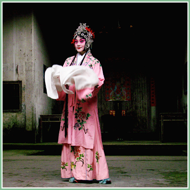
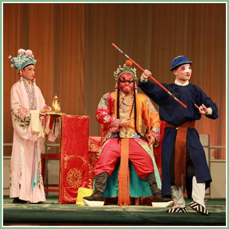

● 黄梅戏 ●

黄梅戏原名黄梅调、采茶戏等，起源于湖北黄梅，发展壮大于安徽安庆。
黄梅戏与京剧、越剧、评剧 、豫剧并称"中国五大戏曲剧种"，也是安徽省的主要地方戏曲剧种，湖北、江西、福建、浙江、江苏、香港、台湾等地亦有黄梅戏的专业或业余的演出团体，受到广泛的欢迎 。
黄梅戏唱腔淳朴流畅，以明快抒情见长，具有丰富的表现力;表演质朴细致，以真实活泼著称。一曲《天仙配》让黄梅戏流行于大江南北，在海外亦有较高的声誉 。
2006年5月20日，黄梅戏经国务院批准列入第一批国家级非物质文化遗产名录。

发展简史
黄梅戏的发展历史，大致分为三个阶段：
第一阶段，约从清乾隆末期到辛亥革命前后。产生和流传到皖、鄂、赣三省间的黄梅采茶调、江西调、桐城调、凤阳歌，受当地戏曲(青阳腔、徽调)演出的影响，与莲湘、高跷、旱船等民间艺术形成结合，逐渐形成了一些小戏。
第二阶段，是从辛亥革命到1949年。这一阶段，黄梅戏演出活动渐渐职业化，并从农村草台走上了城市舞台。
第三阶段，是1949至今。中华人民共和国成立后，黄梅戏得到迅速恢复和发展。

艺术特点
唱腔
黄梅戏唱腔有三种形式：主腔、花腔、三腔（“彩腔”、“仙腔”、“阴司腔”三种腔体的统称）。
黄梅戏语言以安庆地方语言为基础，属北方方言语系的江淮官话。其特点为——唱词结构在整本戏多为七字句和十字句式。
行当
黄梅戏角色行当的体制是在“二小戏”、“三小戏”的基础上发展起来的。上演整本大戏后，角色行当才逐渐发展成正旦、正生、小旦、小生、小丑、老旦、奶生、花脸诸行。